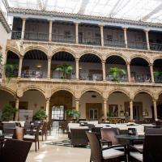
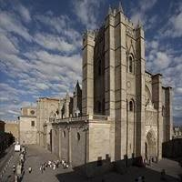
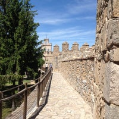
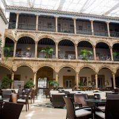
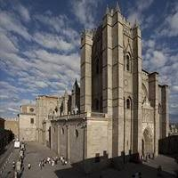
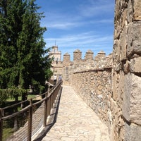

Ávila
 





Nos reuniremos frente a la antigua Casa de las Carnicerías, un edificio histórico que alberga actualmente en su interior la Oficina de Turismo de Ávila. Desde este céntrico punto iniciaremos nuestro paseo por el casco antiguo de esta preciosa ciudad declarada Patrimonio de la Humanidad.
Comenzaremos la ruta siguiendo un tramo de la famosa muralla de Ávila. ¿Cómo se ideó este sistema defensivo? ¿Por qué se ha podido conservar hasta la actualidad? Desvelaremos estos interrogantes del grueso muro que circunda todo el centro histórico de la ciudad mientras nos dirigimos hacia la necrópolis romana. Este yacimiento nos permitirá conocer con más detalle cómo se vivía en esta zona de la Meseta en la Antigüedad.
Continuaremos nuestro paseo por Ávila admirando la arquitectura exterior de diversos palacios renacentistas y de templos como la Basílica de San Vicente, una de las joyas románicas de la ciudad. Durante el recorrido también nos acercaremos hasta el Convento de Santa Teresa. En este histórico edificio monumental visitaremos la sala de reliquias y conoceremos la historia de la religiosa, que también destacó en el ámbito literario como una de las principales figuras del misticismo español junto a San Juan de la Cruz.